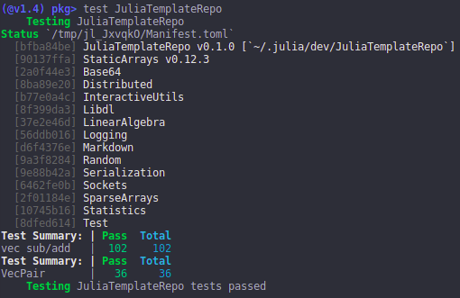

Adding Tests
Let's say we've added some code to our repo (check out src/newcode.jl) and now want to add some unit tests. All unit tests live in the test/ directory and are run via the test/runtests.jl file. Typically the runtests.jl file loads in any packages needed to run the tests, including Test and the actual package being tested, and then includes files that have defined @testsets. See the test/ directory for an example.
If you're using Julia v1.2+, we add the test dependencies the same way we add package dependencies: via the package manager. We first activate the test environment:
] activate /path/to/Algames/testand then add the packages
(test) pkg> add Test
(test) pkg> add StaticArrays
(test) pkg> add LinearAlgebraAdding the [compat] entries for the test Project.toml is suggested, but not required.
We can now run the test suite using the package manager. It's usually a good idea to restart Julia and run the command from the default environment:
] test Algameswhich should return something similar to this:
